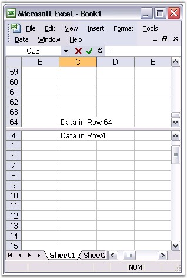

A very handy feature of Excel is its ability to view more than one copy of your worksheet, and scroll through each pane of your worksheet independently. You can do this by using a feature called Split Panes, which can be used to split your worksheet both horizontally and vertically. This is enabled in MS Excel by selecting the Split option from the Window menu.
While using Split Panes, the panes of your worksheet work simultaneously. If you make a change in one, it will simultaneously appear in the other.
XlsIO provides support for splitting the window through the HorizontalSplit and VerticalSplit properties. Following code example illustrates this.
|
[C#]
IWorksheet sheet = book.Worksheets[0];
sheet.FirstVisibleColumn = 5; sheet.FirstVisibleRow = 11; sheet.VerticalSplit = 110; sheet.HorizontalSplit = 100; sheet.ActivePane = 1;
book.SaveAs(WORKSHEETS_PANE); |
|
[VB.NET]
Dim sheet As IWorksheet = book.Worksheets(0)
sheet.FirstVisibleColumn = 5 sheet.FirstVisibleRow = 11 sheet.VerticalSplit = 110 sheet.HorizontalSplit = 100 sheet.ActivePane = 1
book.SaveAs(WORKSHEETS_PANE) |

Figure 149: XlsIO with Freeze Pane